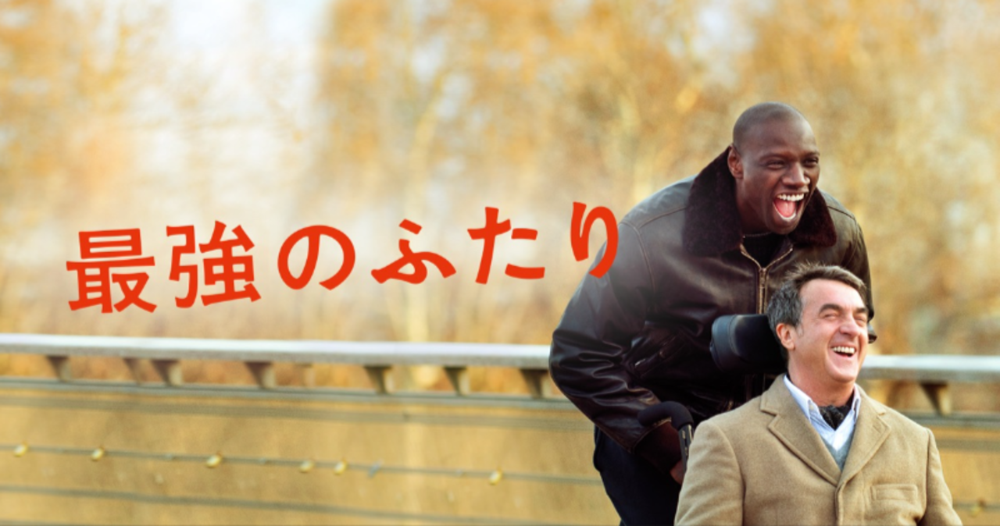

ちかごろ世間で日本歴史の科学的研究ということがしきりに叫ばれている。科学的研究というのが近代史学の学問的方法による研究という意義であるならば、これは史学の学徒の間においては一般に行われていることであるから、今さらこと新しくいう。

日本歴史の科学的研究ということがしきりに叫ばれている。科学的研究というのが近代史学の学問的方法による研究という意義であるならば、これは史学の学徒の間においては一般に行われていることであるから、今さらこと新しくいう。
米海軍史上最高のパイロットでありながら、無鉄砲な性格から一向に昇進せず現役であり続けるMaverick。ある日TOP GUN(米海軍エリート・パイロット養成学校)時のライバルであり現海軍トップのIcemanから、達成不可能なミッションに直面したTOP GUNの新世代パイロット達を指導するという特命を授かる。その中にはかつて同じ戦闘機での訓練飛行中に命を落とした相棒Gooseの息子Roosterの姿があった。ミッション達成のためにMaverickが用意した厳しい練習は次第に生徒の反感を買い、Roosterからは「お前のせいで父親は死んだ」と糾弾される。「もう誰も死なせたくない」という強い決意を胸に秘め、若きTOP GUNと共に自らも空に命を懸ける。
スラム街出身のアフリカ系青年ドリスは、失業手当目当てで向かった先で素直な性格を買われ、大富豪の障害者フィリップの世話役として雇われることとなった。移乗動作、マッサージ、シャワー、挙句の果てには排泄まで手伝うことになり、不満をたれながらも毎日を過ごす。冗談を飛ばすドリスの発言には一般的には差別ととらえられるような物もあるが、障がい者に気を変に気遣わずフラットに接するドリスの人柄に惹かれ、徐々に彼らの友情は生まれていく。障がい者と健常者、大富豪とスラム出身という様々な対比がありながらも、互いに不足している部分を補いあえるフィリップとグリスだからこそ「最強のふたり」なのである。

科学的研究というのが近代史学の学問的方法による研究という意義であるならば、これは史学の学徒の間においては一般に行われていることであるから、今さらこと新しくいう。